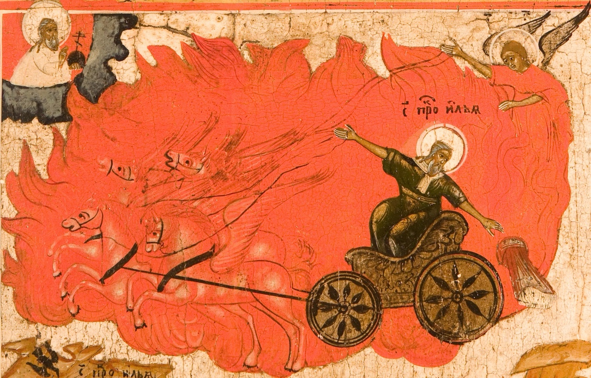
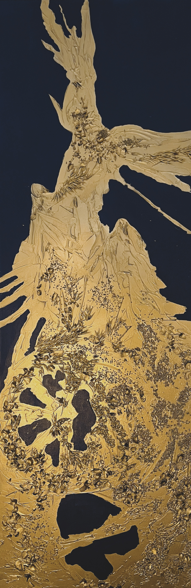
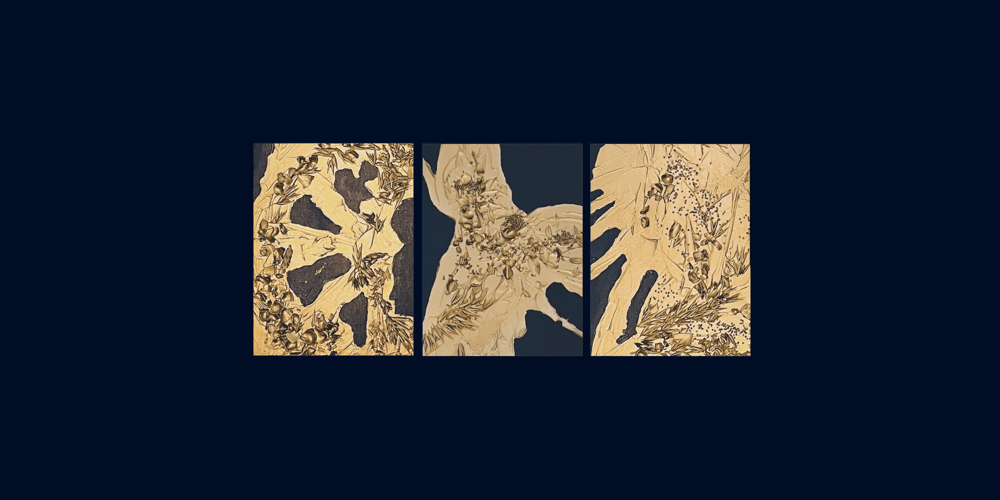

Saint Élie // Илья-пророк



Des pèlerins mendiants arrivèrent à la maison d’Élie. Ils lui demandèrent d’ouvrir la porte et de leur faire l’aumône. Élie se plaignit de ne pouvoir le faire, car depuis trente ans déjà, il ne maîtrisait ni ses bras ni ses jambes. Mais les pèlerins insistèrent. Alors, soudain, Élie se dressa sur ses jambes vigoureuses et ouvrit la porte à ses visiteurs.
Ils remplirent une petite coupe d’une boisson miellée et la tendirent au fils de paysan. Élie but et sentit aussitôt une force immense s’éveiller en lui. « Si seulement, dit-il, il existait un pilier allant de la terre jusqu’au ciel, je retournerais la Terre tout entière ! »
- Илья Муромец, Élie de Mourom, Récits populaires